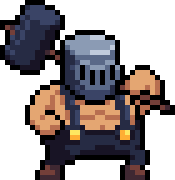

Введение
Archvale - это компьютерная игра жанра RPG. Суть игры проста: путешествуй, сражайся с врагами, улучшай оружие. В игре не мало боссов и очень разнообразное оружие. Удачи в исследование этого удивительного и загадочного мира!
Баланс классов в игре отличный, нет такого, что один класс выделяется на фоне остальных, но как это обычно происходит, воин - самый простой для новичков, поэтотому именно на его примере будет описанно прохождение игры.
Начало
Итак, первое доступное вам оружие - это Деревянный клинок. Отлично подходит для начала
Первый ваш враг - слизень. Он не представляет из себя чего-то удивительного. Далее вы встретите ворон и слизней побольше.
Что бы скрафтить новую экипировку добывайте раковины и железную руду.

На пути вы встретите деревню. В ней вы сможете скрафтить новую броню и оружие на наковальне. Скорее всего вам не будет хватать на железную экипировку поэтому, создайте броню из раковин, а меч из железа

x25
x25
x25
Так же на заработанные с врагов деньги вы можете купить что-то у торговцев
А у повара из найденных в мире мегаслив вы сможете сварить улучшение для ваших зелий лечения

Немного исследовав локацию вы найдете вашего первого босса. Он будет не сложный

Дальше ваша задачи полностью исследовать локацию, после чего вернитесь в деревню и создайте броню из железа. Поздравляю, теперь вы готовы для исследования крепости. Это будет довольно сложно, но я в вас верю! В крепости будет босс, который сможет заставить вас поднапрячься
Вторая локация. Янтарная тропа
Здесь вам нужно добывать золото и потом из него скрафтить экипировку

х30

х35

x45
Только после того, как скрафтите золотые шмотки отправляйтесь в лагеря бандитов, там вас будет ждать босс, для воина это будет не простой бой, но я не сомневаюсь в вашем триумфе.
